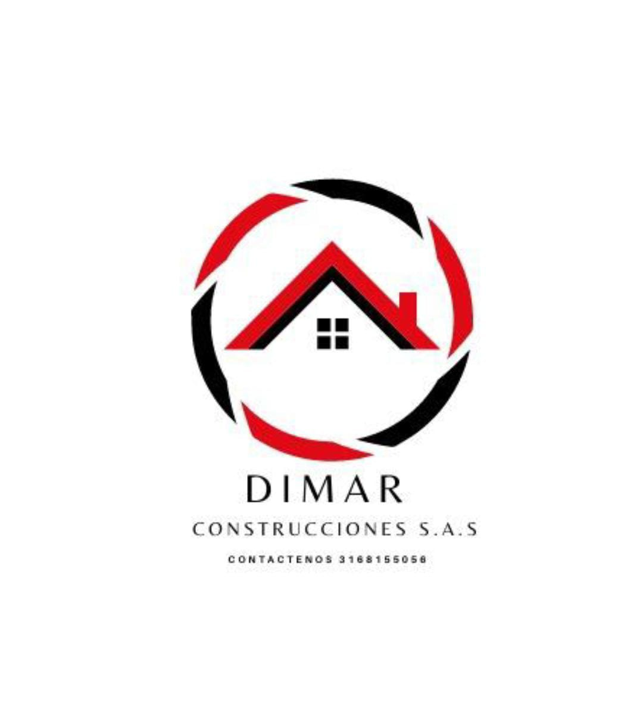

Drywall y PVC
Instalación de cielorrasos, divisiones, enchapes decorativos y soluciones livianas para interiores.
Obra gris y acabados en Bogotá
Soluciones integrales para transformar, reparar y terminar espacios con mano de obra responsable en drywall, PVC, estuco, pintura, plomería, electricidad y carpintería.

Atención directa para proyectos residenciales y comerciales en Bogotá.
316 815 5056Todo para tu obra
Un solo equipo para avanzar desde adecuaciones técnicas hasta los detalles finales de cada espacio.
Instalación de cielorrasos, divisiones, enchapes decorativos y soluciones livianas para interiores.
Preparación de superficies, acabados limpios y aplicación de color para renovar viviendas y locales.
Reparaciones, instalaciones y ajustes hidráulicos para baños, cocinas y zonas de lavado.
Puntos eléctricos, iluminación, mantenimiento y adecuaciones con enfoque funcional y seguro.
Apoyo en muebles, puertas, ajustes y detalles finales para entregar espacios listos para usar.
Adecuaciones, reparaciones y preparación del espacio antes de iniciar acabados finales.
Trabajo claro
DIMAR acompaña cada proyecto con visita, diagnóstico, cotización y ejecución organizada para que sepas qué se hará, cuánto tarda y cómo queda.
Contacto y revisión de la necesidad.
Cotización según materiales, área y tipo de trabajo.
Ejecución de obra con acabados limpios.
Contáctenos
Atención en Bogotá para obra gris, obra blanca, remodelaciones y acabados.